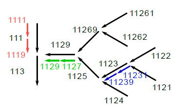

networktools¶
This module provides features for preparing HydPy networks based on different data.
Module networktools implements the following members:
RiverBasinNumberA single river basin number (Gewässerkennzahl) based on a guideline of the German organisation LAWA (Länderarbeitsgemeinschaft Wasser: Richtlinie für die Gebietsbezeichung und die Verschlüsselung von Fließgewässern, 1970).
RiverBasinNumbersA sorted collection ofRiverBasinNumberobjects.
RiverBasinNumbers2SelectionClass for defining aSelectionobject based on a givenRiverBasinNumbersobject.
-
class
hydpy.auxs.networktools.RiverBasinNumber(value: Union[int, str])[source]¶ Bases:
strA single river basin number (Gewässerkennzahl) based on a guideline of the German organisation LAWA (Länderarbeitsgemeinschaft Wasser: Richtlinie für die Gebietsbezeichung und die Verschlüsselung von Fließgewässern, 1970).
RiverBasinNumberignores the fill number zero:>>> RiverBasinNumber(1230) RiverBasinNumber(123) >>> RiverBasinNumber("0123") RiverBasinNumber(123)
Numbers not interpretable as a river basin number result in the following error message:
>>> RiverBasinNumber("123A") Traceback (most recent call last): ... ValueError: The given value `123A` could not be interpreted as a river basin number.
Use the in operator to find out if one river basin lies within the source area of another one. For example, 56626131 lies upstream of 566331:
>>> RiverBasinNumber(56626131) in RiverBasinNumber(566331) True >>> RiverBasinNumber(566331) in RiverBasinNumber(56626131) False
River basin 532142 does neither lie upstream nor downstream of river basin 566331:
>>> RiverBasinNumber(532142) in RiverBasinNumber(566331) False >>> RiverBasinNumber(566331) in RiverBasinNumber(532142) False
For river basins numbers that are identical in all shared digits, the result is always
False:>>> RiverBasinNumber(566331) in RiverBasinNumber(566331) False >>> RiverBasinNumber(566331) in RiverBasinNumber(5663311) False
-
property
is_rivermouth¶ Only true if the river basin number ends with 9.
>>> from hydpy import RiverBasinNumber >>> RiverBasinNumber(129).is_rivermouth True >>> RiverBasinNumber(123).is_rivermouth False
-
property
is_mainchannel¶ Only true if the river basin number ends with an odd number.
>>> from hydpy import RiverBasinNumber >>> for number in range(120, 130): ... rbn = RiverBasinNumber(number) ... print(number, rbn, rbn.is_mainchannel) 120 12 False 121 121 True 122 122 False 123 123 True 124 124 False 125 125 True 126 126 False 127 127 True 128 128 False 129 129 True
-
property
is_tributary¶ Only true if the river basin number ends with an even number.
>>> from hydpy import RiverBasinNumber >>> for number in range(120, 130): ... rbn = RiverBasinNumber(number) ... print(number, rbn, rbn.is_tributary) 120 12 True 121 121 False 122 122 True 123 123 False 124 124 True 125 125 False 126 126 True 127 127 False 128 128 True 129 129 False
-
property
possible_next_initial_digits¶ Return all potential candidates for the next downstream river basin number.
Eventually, only the first and the last returned candidate should be relevant. But to return all possible intermediate candidates might be safer to capture unexpected river basin number specifications.
The candidate numbers might be incomplete. For example, the next number downstream of 123 could be 1251 instead of 125:
>>> from hydpy import RiverBasinNumber >>> for number in range(120, 130): ... rbn = RiverBasinNumber(number) ... print(number, rbn, rbn.possible_next_initial_digits) 120 12 ('13', '15', '17', '19') 121 121 ('123', '125', '127', '129') 122 122 ('123', '125', '127', '129') 123 123 ('125', '127', '129') 124 124 ('125', '127', '129') 125 125 ('127', '129') 126 126 ('127', '129') 127 127 ('129',) 128 128 ('129',) 129 129 ('13', '15', '17', '19')
-
property
nmb_digits¶ The number of (significant) digits of a river basin number.
>>> from hydpy import RiverBasinNumber >>> RiverBasinNumber(120).nmb_digits 2
-
property
-
class
hydpy.auxs.networktools.RiverBasinNumbers(values: Iterable[Union[int, str]])[source]¶ Bases:
tupleA sorted collection of
RiverBasinNumberobjects.>>> from hydpy import RiverBasinNumbers >>> rbns = RiverBasinNumbers((111, 113, 1132, 1129, 11269, 1125, 11261, ... 11262, 1123, 1124, 1122, 1121)) >>> rbns RiverBasinNumbers((111, 1121, 1122, 1123, 1124, 1125, 11261, 11262, 11269, 1129, 113, 1132))
The in operator works as to be expected, but performs an automatic type conversion and relies on a more efficient implementation than the one of the base class
tuple:>>> 113 in rbns True >>> 1126 in rbns False >>> 11262 in rbns True >>> 11263 in rbns False
-
select(number: Union[int, str]) → hydpy.auxs.networktools.RiverBasinNumbers[source]¶ Select and return all river basin numbers starting with the given number.
>>> from hydpy import RiverBasinNumbers >>> rbns = RiverBasinNumbers((111, 113, 1132, 1129, 11269, 1125, 11261, ... 11262, 1123, 1124, 1122, 1121)) >>> rbns.select(111) RiverBasinNumbers((111,)) >>> rbns.select(112) RiverBasinNumbers((1121, 1122, 1123, 1124, 1125, 11261, 11262, 11269, 1129)) >>> rbns.select(113) RiverBasinNumbers((113, 1132)) >>> rbns.select(114) RiverBasinNumbers(())
-
property
next_numbers¶ A tuple of the next downstream river basin numbers.
The order of the returned numbers corresponds to the order of the numbers contained by the actual
RiverBasinNumbersobject.The number of the subcatchment immediately downstream of the outlet subcatchment is not known. The tuple contains a
Noneobject instead (or multipleNoneobjects in case of multiple outlets).Eventually, not all possible combinations of river basin numbers are covered. Please keep us informed if you notice a problem when applying this algorithm to your data. At least, the algorithm works properly on the following test case provided by Michael Wagner (TU Dresden):
At first, we consider only the black arrows, exemplifying the basic definition of river basin numbers:
>>> from hydpy import RiverBasinNumbers >>> rbns = RiverBasinNumbers((111, 113, 1129, 11269, 1125, 11261, ... 11262, 1123, 1124, 1122, 1121)) >>> for this_rbn, next_rbn in zip(rbns, rbns.next_numbers): ... print(this_rbn.ljust(6), next_rbn) 111 113 1121 1123 1122 1123 1123 1125 1124 1125 1125 1129 11261 11269 11262 11269 11269 1129 1129 113 113 None
The coloured arrows exemplify the situation, where some additional subdivisions become necessary:
>>> from hydpy import RiverBasinNumbers >>> rbns = RiverBasinNumbers((1111, 1119, 113, 1129, 1127, ... 11269, 1125, 11261, 11262, 11239, ... 11231, 1124, 1122, 1121)) >>> for this_rbn, next_rbn in zip(rbns, rbns.next_numbers): ... print(this_rbn.ljust(6), next_rbn) 1111 1119 1119 113 1121 11231 1122 11231 11231 11239 11239 1125 1124 1125 1125 1127 11261 11269 11262 11269 11269 1127 1127 1129 1129 113 113 None
-
-
class
hydpy.auxs.networktools.RiverBasinNumbers2Selection(numbers: Iterable[Union[int, str]])[source]¶ Bases:
objectClass for defining a
Selectionobject based on a givenRiverBasinNumbersobject.Note that this class does not cover all possible HydPy networks. So it might be necessary to make some adjustments on the returned selection, e.g. to define individual names for specific elements or nodes.
All examples in the documentation on the methods and properties of class
RiverBasinNumbers2Selectionrely on the river basin numbers defined in the documentation on classRiverBasinNumbers.-
property
supplier_elements¶ An
Elementsobject containing all “supplying basins”.(All river basins are assumed to supply something to the downstream basin.)
>>> from hydpy import RiverBasinNumbers2Selection >>> rbns2s = RiverBasinNumbers2Selection( ... (111, 113, 1129, 11269, 1125, 11261, ... 11262, 1123, 1124, 1122, 1121))
The following elements are correctly connected to the required outlet nodes already:
>>> for element in rbns2s.supplier_elements: ... print(repr(element)) Element("land_111", outlets="node_113") Element("land_1121", outlets="node_1123") Element("land_1122", outlets="node_1123") Element("land_1123", outlets="node_1125") Element("land_1124", outlets="node_1125") Element("land_1125", outlets="node_1129") Element("land_11261", outlets="node_11269") Element("land_11262", outlets="node_11269") Element("land_11269", outlets="node_1129") Element("land_1129", outlets="node_113") Element("land_113", outlets="node_outlet")
It is both possible to change the prefix names of the elements and nodes:
>>> rbns2s.supplier_prefix = "a_" >>> rbns2s.node_prefix = "b_" >>> rbns2s.supplier_elements Elements("a_111", "a_1121", "a_1122", "a_1123", "a_1124", "a_1125", "a_11261", "a_11262", "a_11269", "a_1129", "a_113")
-
property
router_elements¶ An
Elementsobject containing all “routing basins”.(Only river basins with an upstream basin are assumed to route something to the downstream basin.)
>>> from hydpy import RiverBasinNumbers2Selection >>> rbns2s = RiverBasinNumbers2Selection( ... (111, 113, 1129, 11269, 1125, 11261, ... 11262, 1123, 1124, 1122, 1121))
The following elements are correctly connected to the required inlet and outlet nodes already:
>>> for element in rbns2s.router_elements: ... print(repr(element)) Element("stream_1123", inlets="node_1123", outlets="node_1125") Element("stream_1125", inlets="node_1125", outlets="node_1129") Element("stream_11269", inlets="node_11269", outlets="node_1129") Element("stream_1129", inlets="node_1129", outlets="node_113") Element("stream_113", inlets="node_113", outlets="node_outlet")
It is both possible to change the prefix names of the elements and nodes:
>>> rbns2s.router_prefix = "c_" >>> rbns2s.node_prefix = "d_" >>> rbns2s.router_elements Elements("c_1123", "c_1125", "c_11269", "c_1129", "c_113")
-
property
elements¶ An
Elementsobject containing all required elements (both thesupplier_elementsand therouter_elements).
-
property
nodes¶ A
Nodesobject containing all required nodes, including the outlet node.>>> from hydpy import RiverBasinNumbers2Selection >>> rbns2s = RiverBasinNumbers2Selection( ... (111, 113, 1129, 11269, 1125, 11261, ... 11262, 1123, 1124, 1122, 1121)) >>> rbns2s.nodes Nodes("node_1123", "node_1125", "node_11269", "node_1129", "node_113", "node_outlet")
It is both possible to change the prefix names of the nodes and the name of the outlet node separately:
>>> rbns2s.node_prefix = "b_" >>> rbns2s.last_node = "l_node" >>> rbns2s.nodes Nodes("b_1123", "b_1125", "b_11269", "b_1129", "b_113", "l_node")
-
property
selection¶ A complete
Selectionobject containing all required elements and nodes.>>> from hydpy import RiverBasinNumbers2Selection >>> rbns2s = RiverBasinNumbers2Selection( ... (111, 113, 1129, 11269, 1125, 11261, ... 11262, 1123, 1124, 1122, 1121)) >>> rbns2s.selection Selection("complete", nodes=("node_1123", "node_1125", "node_11269", "node_1129", "node_113", "node_outlet"), elements=("land_111", "land_1121", "land_1122", "land_1123", "land_1124", "land_1125", "land_11261", "land_11262", "land_11269", "land_1129", "land_113", "stream_1123", "stream_1125", "stream_11269", "stream_1129", "stream_113"))
Besides the possible modifications on the names of the different nodes and elements, one is also free to define an arbitrary selection name:
>>> rbns2s.selection_name = "sel" >>> from hydpy import pub >>> with pub.options.ellipsis(1): ... print(repr(rbns2s.selection)) Selection("sel", nodes=("node_1123", ...,"node_outlet"), elements=("land_111", ...,"stream_113"))
-
property